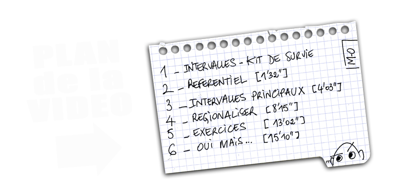
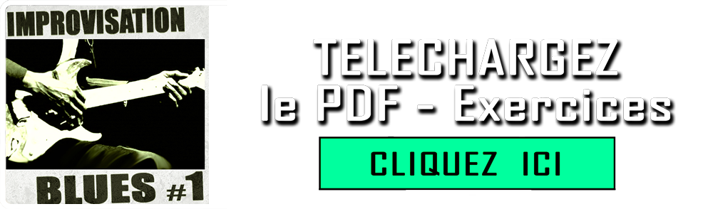
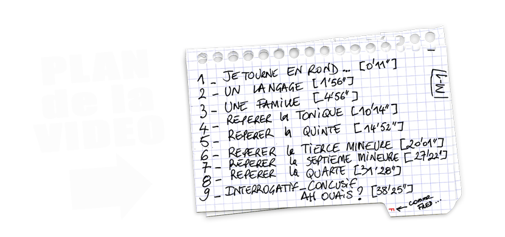
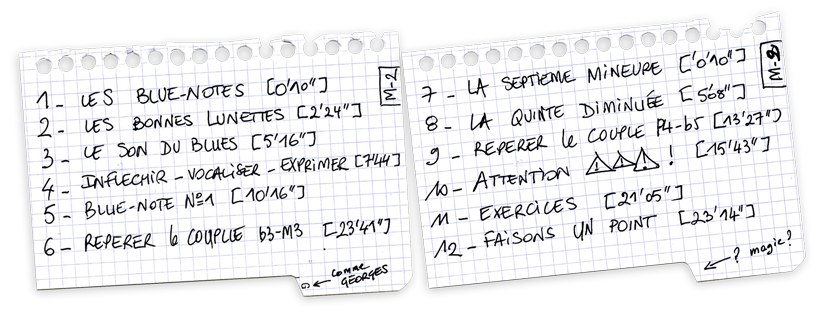
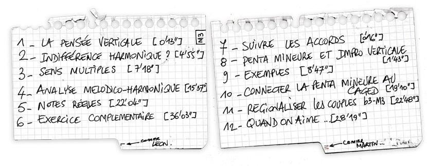
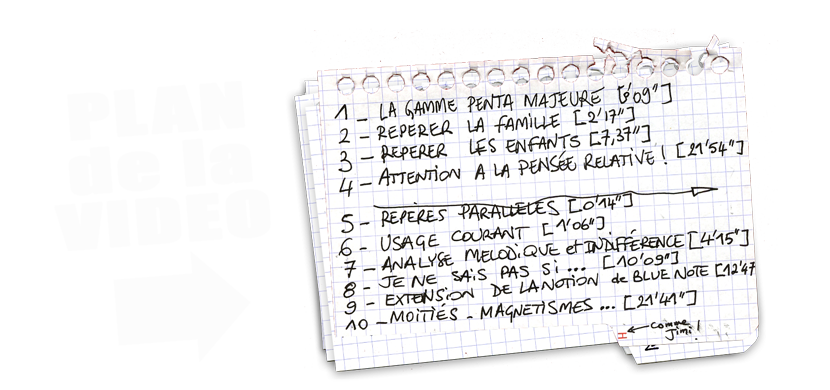
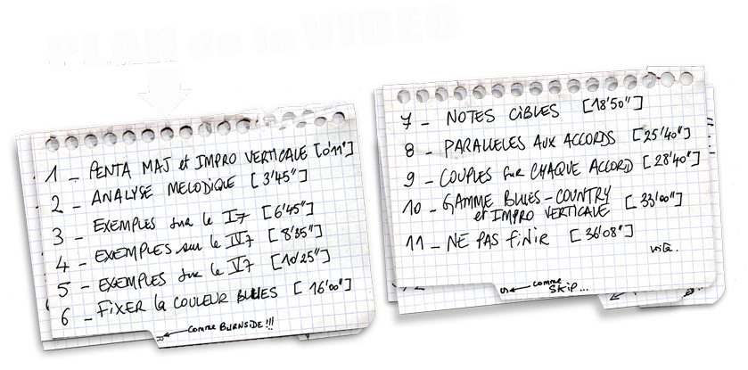
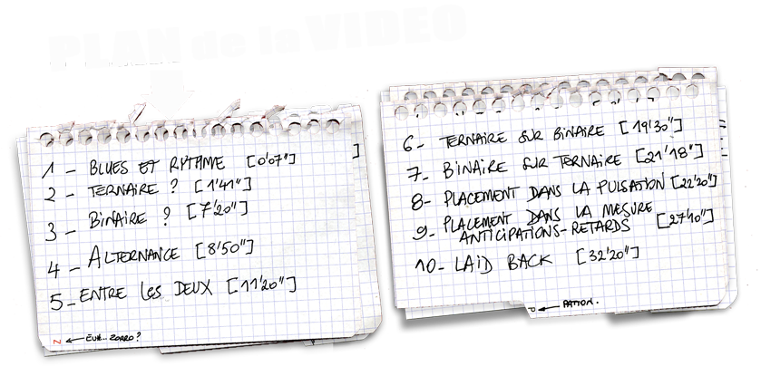

Accueil
| Sommaire | ||
|---|---|---|
| Module 0 | LES BASES Préalables, notions de base, Kit de survie "INTERVALLES" |
Ouvrir → |
| Module 1 | EXPLOITER LA PENTATONIQUE MINEURE Comprendre et entendre ce qui se passe dans la structure de cette gamme |
Ouvrir → |
| Module 2 | LES BLUE-NOTES Inflexions et vocalité. Expressivité du jeu. |
Ouvrir → |
| Module 3 | PENTATONIQUE MINEURE et IMPROVISATION VERTICALE Mettre en valeur les accords, donner du sens et de l'évidence à son jeu |
Ouvrir → |
| Module 4 | LA PENTATONIQUE MAJEURE Une autre couleur, les 3 défauts qui freinent les guitaristes, couples de couleurs |
Ouvrir → |
| Module 5 | PENTA MAJEURE ET IMPRO VERTICALE Notes cibles, phrases hybrides, questions réponses |
Ouvrir → |
| Module 6 | LE PHRASé RYTHMIQUE Vitalité rythmique, placement, anticipations, retards, dynamique... |
Ouvrir → |
| Module 7 | BACKING-TRACKS Tous les BT de tous les modules |
Ouvrir → |
| Module 8 | PERSPECTIVES C'est important les perspectives... Complètement complémentaire. |
Ouvrir → |
Module 0 — LES BASES
← Retour à l’accueilQuelques notions de départ pour profiter au mieux de la formation.
Gamme Pentatonique mineure et Kit de survie "Intervalles"
1) KIT DE SURVIE "INTERVALLES"
Voici une vidéo qui vous permettra de nommer les choses. Plutôt que "tu vois la note, un peu en dessous, non plus bas, un peu à gauche mais pas trop, juste après le tas de pierres en bois", vous pourrez juste dire "la b3". Il ne s'agit pas ici d'aborder toutes les subtilités des intervalles, ni de les reconnaître à l'oreille, ni de comprendre tout ce qu'ils peuvent faire pour vous (il y a une formation pour ça), ici on se sert des intervalles pour nommer les notes par rapport à l'accord ou la tonalité de notre blues. Prenez le temps de faire les exercices (des diagrammes vierges et les solutions vous attendent dans le PDF en bas de page). Vous trouverez aussi des versions des PDF pour les gauchers (sauf les modules 6-7 et 8, parce qu'ils ne comportent pas de diagrammes). Oui je sais... C'est cool.

2) LES BASES DE LA PENTA - 1
Les 3 vidéos suivantes pourront vous être utiles pour révision si besoin. Si vous débutez, elles vous seront d'une grande aide pour la suite. Elle sont parues sur ma chaîne "La minute utile du musicien" au tout début de celle-ci. J'y ai une drôle de tête, je n'avais pas trop l'habitude de la caméra, j'ai l'air tout coincé... Mais ce sont de bonnes vidéos. Il aurait été idiot de s'en passer pour préparer ce programme. La première vous donne des repères sur ce que cette gamme est vraiment, sa nature et deux ou trois autres choses utiles...
3) LES BASES DE LA PENTA - 2
Il existe une grande confusion sur l'utilité des "positions" d'une gamme sur la guitare. Les débutants pensent souvent qu'il faut commencer par apprendre toutes les positions de cette gamme, avant de commencer à s'en servir. Vous verrez dans cette formation que je conseille le contraire... Commençons par répondre à certaines interrogations courantes. A quoi servent-elles ? Comment les retrouver ? Qu'est-ce qui est le plus urgent ?
4) LES BASES DE LA PENTA - 3
Bon, c'est bien beau ! Mais si je veux profiter pleinement de la formation en connaissant déjà mes 5 positions de la gamme pentatonique, je fais comment pour les mémoriser? Dois-je les apprendre bêtement ou y a t'il une structure cachée? Une géométrie avantageuse qui puisse m'aider ? OK, on y va les amis...

Module 1 — LA PENTATONIQUE MINEURE
← Retour à l’accueilComprendre et entendre ce qui se passe dans la structure de cette gamme
1) COMPRENDRE
Dans cette partie "comprendre", on essaie de tisser des liens entre les choses pour en saisir l'esprit. Car les choses sans l'esprit des choses, ne sont rien... (vachement clair comme phrase!) Bref le BLUES est une musique profonde, intense et magnétique, elle a infusée partout, je trouve important d'essayer d'en saisir l'esprit. Chaque module débutera par une vidéo de cette série. Elles sont optionnelles si vous voulez, mais elles sont fondamentales pour moi... C'est dit. On commence avec "Une musique nouvelle".
2) REPERER
On croit souvent connaître la gamme Pentatonique mineure et on ressent assez vite le sentiment de tourner en rond en jouant dessus. Si c'est votre cas, alors quelque chose vous a échappé ! Les modules 1 et 2 vous permettront de comprendre quoi ! Une famille... Une gamme est une famille. Ces deux modules vous feront rejoindre ceux qui savent très bien qu'il est impossible de tourner en rond sur quoi que ce soit. C'est souvent la créativité qui tourne en rond. On va y remédier avec le PDF d'exercices. Prenez le temps de sentir tout ça, ouvrez vos oreilles. Ah au fait ! J'ai ajouté une option de variation de vitesse des vidéos (quand c'est utile), ce sera pratique pour les plans un peu rapides... Cliquez sur la roue crantée dans le coin en bas à droite des vidéos.

3) LES ASTUCES...
Notez que toutes les vidéos peuvent être agrandies... Voici une première astuce pour vous permettre
de mémoriser facilement la Gamme Pentatonique mineure. La plupart du temps les élèves sont
incapables de la chanter... C'est pourtant important pour la suite de vos progrès, pour ne pas juste
poser les doigts quelque part ! La deuxième est plutôt un exercice (mais bon, je fais ce que je
veux)...
Euh ,au fait, plus la peine de me conseiller sur ma panne hein ! C'est réparé.
4) VOCABULAIRE
Il est fondamental d'apprendre de la musique par coeur, en grande quantité... Il s'agit d'amasserer du vocabulaire, mais aussi de l'articulation, de la dynamique et mille autres choses sans lesquelles vous ne pourrez pas vous exprimer ! Les notes ne sont rien, c'est tout le reste qui fait le boulot... Ces quelques minutes ont été jouées pour mettre en évidence le contenu des vidéos du module. J'essaie d'y jouer sans virtuosité, le principe est ailleurs... Apprenez-les. Passez-y du temps pour les détails, vous disposez du relevé en tablatures et partitions dans le PDF téléchargeable en bas de page. Et comme je suis un mec cool, vous disposez du Backing-track pour bosser, juste en dessous... C'est dingue.
TELECHARGER MP3
5) BACKING-TRACKS 100% BIO
L'ensemble de ce module est à travailler en contexte, votre oreille en a besoin... C'est le meilleur moyen de mettre tout ça en application, servez vous des exercices donnés dans le PDF (à la fin) pour guider votre travail. Voici des Backing-tracks faits maison, où on joue ensemble, en duos, pour rester dans quelque chose de simple et roots, qui laisse de la place pour vos improvisations, et qui ne sonne pas comme les BT qu'on trouve partout sur YouTube avec des batterie en plastique (désolé, je suis allergique !). Mais si vous en trouvez qui vous plaisent, vous devez évidemment vous en servir aussi. Chaque module aura ses nouveaux BT. Et un module à la fin de la formation les rassemblera tous au même endroit. C'est bien aussi de jouer tous les exemples des vidéos sur ces BT. Allez hop !
Module 2 — LES BLUE-NOTES
← Retour à l’accueilInflexions et vocalité. Expressivité du jeu.
1) COMPRENDRE
Le BLUES est une musique de traces. Elle porte en elle des couches sédimentaires encore visibles, si on utilise les bonnes lunettes. On y voit clairement ses origines mélodiques, plus diverses que ce que l'on croit, on y reconnait de grands oubliés de l'histoire. Rien de dogmatique ici, non plus de vérités toutes faites qu'on a lues 100 fois dans les livres, juste de l'observation et de la créativité. C'est ce que le Blues a toujours fait de mieux en somme, alors prenons exemple sur lui.
2) REPERER
ATTENTION ! Toute note peut être affectée d'un bend (pourvu qu'elle vise une autre note désirée). Ce
que j'appelle "tordre" est autre chose : il s'agit alors d'infléchir de façon microtonale une note
(variation inférieure au demi-ton). Par exemple la Tonique peut être bendée par exemple jusqu'à la
seconde majeure ou la tierce mineure, mais elle ne peut pas être "tordue" de façon microtonale. Pigé
?
La source du Blues est mélodique. Et ses particularismes sont la base de ses couleurs. Encore une
fois, ce sont les détails qui font toute la différence entre un jeu mature et expressif et une
errance sans fin qu'on a du mal à écouter. Chaque guitariste peut devenir un vrai bluesman,
développer ses propres solutions et son propre style, mais il doit observer ce qui fait le son de
cette musique pour y trouver ce qui le fait vibrer personnellement. Attention, quand je dis
"tordre", je ne parle pas de bend, mais d'inflixion micro-tonale. Quand je veux parler de bend, je
dis... "bend". Je vous rappelle que tous les exemples sont repris dans le PDF, et que vous trouverez
des exercices à la fin de celui-ci pour mettre tout ça en oeuvre de façon intelligente et sensible
(rien que ça!). Ouvrez vos oreilles.

3) LES ASTUCES...
Notez que toutes les vidéos peuvent être agrandies... Voici une première astuce pour vous permettre
de mémoriser facilement la Gamme Pentatonique mineure. La plupart du temps les élèves sont
incapables de la chanter... C'est pourtant important pour la suite de vos progrès, pour ne pas juste
poser les doigts quelque part ! La deuxième est plutôt un exercice (mais bon, je fais ce que je
veux)...
Euh ,au fait, plus la peine de me conseiller sur ma panne hein ! C'est réparé.
4) PRATIQUER
Les éléments de legato sont un des points forts de la guitare. Cet instrument peut être extrêmement expressif si on joue sur ses qualités. C'est sans doute ce qui fait qu'on pense régulièrement que la guitare "c'est fini" et que 2 ans après on se retrouve avec des groupes à grattes dans tous les coins du monde. Tant qu'il y aura des hommes il y aura des guitares, et je soupçonne même les chats de vouloir prendre la relève après nous... Et tant qu'il y aura des guitares, il y aura des BENDS...
5) VOCABULAIRE
Pour bien observer comment fonctionnent les blue-notes, il faut apprendre de la musique par cœur. On peut dire que ce PDF n'en manque pas, faites-vous plaisir ! On poursuit avec nos séances de VOCABULAIRE, ici j'ai fait deux vidéos, la première pour les plus débutants, la seconde pour les plus avancés ( je n'ai pas encore fait le relevé de cette dernière, mais ça pourrait être un bon exercice pour vous en attendant). Notez que dans ces vidéos de Vocabulaire, je m'efforce de jouer assez simplement pour que le sujet reste visible et facile à isoler pour le travailler.
6) BACKING-TRACKS 100% BIO
Hey les amis, voici 4 nouveaux backing-tracks statiques sur un accord. Pour moi il est crucial d'obtenir déjà de bonnes sensations sur un accord stable avant de s'attaquer à la grille complète. Le module suivant vous permettra de commencer le travail de mise en valeur des accords. Mais pour le moment, on continue à mettre en place le contenu du cours. On tord, mais pas n'importe comment... Et on ouvre ses oreilles. C'est bien aussi de jouer tous les exemples des vidéos sur ces BT. Faites vous plaisir. Allez hop !
Module 3 — PENTATONIQUE MINEURE et IMPROVISATION VERTICALE
← Retour à l’accueilMettre en valeur les accords pour donner du sens et de l'évidence à son jeu.
1) COMPRENDRE
Ce module est... copieux. Si vous débutez, vous devez avoir déjà bien avancé sur vos sensations dans les modules précédent avant d'attaquer ici. Mais vous pouvez aussi regarder en attendant par curiosité, c'est toujours ça de pris pour la suite ! L'harmonie BLUES est un truc spécial, très spécial, presque une aberration magnifique. On décortique ici une approche harmonique du blues, puisqu'on va commencer dans ce module l'improvisation verticale, c'est à dire trouver dans la grille harmonique des solutions pour rendre notre jeu plus sensé, évident, élégant... La classe quoi ! J'y donne aussi quelques petits trucs pour les plus avancés, donc pas de panique pour les autres sur la fin de la vidéo, essayez juste d'écouter et jouer les choses... Tous est dans le PDF.
2) BONUS - OUI C'EST COOL ...
Dans la vidéo "COMPRENDRE" je vous promets des vidéos appropriées pour expliquer mieux certains points, ce sont de petits extraits de ma formation "INTERVALLES ET SYSTEME CAGED". Ceux parmi vous qui l'ont suivie savent quel outil fabuleux ça représente de maîtriser cela. Cela forme un tout, avec notre sujet présent (IMPRO BLUES) qui peut projeter votre jeu et votre vision dans une autre dimension... "Vers l'infini et au delààààà!"
3) REPERER
Ce n'est pas parce qu'on joue en "indifférence harmonique" qu'on est sourd ! Même si on n'utilise que la gamme pentatonique mineure sur tout le Blues, la réalité est que les accords sont ce qu'ils sont, ils font entendre vos lignes mélodiques par un nouvel éclairage. Je vous conseille donc d'être conscient des choses qui sous-tendent votre discours, d'entendre ces changements harmoniques pour développer des phrases qui soient les plus évidentes possibles et élégantes et sauvages aussi... et ... et. Bref, Dans ces deux vidéos, on commence le boulot qui est rarement maîtrisé chez les élèves : l'improvisation verticale. Les accords sont là ! Jouons sur eux, et avec eux... Pas contre eux. En tout cas ce que vous faites doit être voulu à 100%. Ah ! Au fait, mineure ! (avec un "e" à 19'10'' de la seconde vidéo...)

4) LES ASTUCES...
Notez que toutes les vidéos peuvent être agrandies... Voici une première astuce pour vous permettre
de mémoriser facilement la Gamme Pentatonique mineure. La plupart du temps les élèves sont
incapables de la chanter... C'est pourtant important pour la suite de vos progrès, pour ne pas juste
poser les doigts quelque part ! La deuxième est plutôt un exercice (mais bon, je fais ce que je
veux)...
Euh ,au fait, plus la peine de me conseiller sur ma panne hein ! C'est réparé.
5) PRATIQUER
La différence entre un jeu expressif et un jeu tout plat est la même que celle qui existe entre une parole qui touche ou émeut et un serveur vocal teléphonique. L'humanité est sensible à la singularité, à l'intension, aux marques d'expression, aux petites attentions pour offrir. Désolé pour l'image ci-dessous, mais Martin est venu me parler, j'ai fait "pause" et ma tête l'a fait marrer. Il m'a défié de garder cette image... Comme quoi on peut mal connaître son père. Et maintenant c'est moi qu'elle fait marrer... et puis vous peut-être. L'intention d'offrir, de vouloir que les gens soient bien, passe parfois par de drôles d'endroits.
6) VOCABULAIRE
Il est fondamental d'apprendre de la musique par coeur, en grande quantité... Il s'agit d'amasser du vocabulaire, mais aussi de l'articulation, de la dynamique et mille autres choses sans lesquelles vous ne pourrez pas vous exprimer ! Les notes ne sont rien, c'est tout le reste qui fait le boulot... Ces quelques minutes ont été jouées pour mettre en évidence le contenu des vidéos du module. J'essaie d'y jouer sans virtuosité, le principe est ailleurs... Apprenez-les. Passez-y du temps pour les détails, vous disposez du relevé en tablatures et partitions dans le PDF téléchargeable en bas de page ainsi que du Backing-track en vidéo juste à côté pour les codes couleurs et les animaux... Et comme je suis un mec cool, vous l'avez aussi en MP3 pour bosser, juste en dessous... C'est dingue.
7) BACKING-TRACKS 100% BIO
Les choses sérieuses commencent! On va travailler votre conscience de la grille, pour savoir à tout moment quel accord, quelle direction, que mettre en valeur, que viser... Pour travailler ça, j'ai mis au point depuis 35 ans avec mes élèves, une methode infaillible pour vous raccrocher enfin à la structure harmonique du blues. 2 étapes, la première est celle des BINÔMES, la seconde celle des LIGNES. Chaque module aura ses nouveaux BT. Et un module à la fin de la formation les rassemblera tous au même endroit. C'est bien aussi de jouer tous les exemples des vidéos sur ces BT. Allez hop !
TRAVALLER LES BINÔMES
On travaille des séquences de deux accords pour se familiariser avec ces passages glissants. Deux mesures sur chaque accord, la vidéo peut vous aider grâce au code couleur et aux indications des accords. Faites cela longtemps, la transe favorise l'intuition... Ici vous avez tous les binômes possibles IV-I / V-I / V-IV . Prenez le temps de ces exercices, il faut les maîtriser avant de passer sur le backing-track seul (sans vidéo). Chaque vidéo peut être agrandie.
TRAVALLER LES LIGNES
Maintenant, vous pouvez commencer à travailler chaque ligne du BLUES indépendamment. Cet exercice est capital pour ne pas avoir toujours un train de retard sur les changements d'accords. Le PDF (à la fin) contient plein d'exercices et de pistes pour guider vos recherches...
TRAVALLER LA GRILLE ENTIERE
Allez c'est parti ! On recolle les morceaux !!! Soyez patient, vous aurez peut être du mal au début, c'est normal, quand on commence ce travail, on est obligé de penser... Lorsqu'on apprend une langue on commence par penser "il me faut un verbe, mais il est où ce verbe, comment je dois dire déjà?" et peu à peu on ne pense plus à rien d'autres qu'au message, à ce qu'on a à dire... Pour l'improvisation , c'est la même chose. L'être tout entier fabrique peu à peu de l'intuition, cela prend du temps, c'est la moindre des choses... La vidéo vous donne les codes couleurs, le BT... bah non !
Module 4 — LA PENTATONIQUE MAJEURE
← Retour à l’accueilUne autre couleur, les 3 défauts qui freinent les guitaristes, couples de couleurs
1) COMPRENDRE
On croit toujours que la structure du blues est quelque chose d'immuable. Qu'il est tombé comme ça du ciel, tout cuit, tout formaté. Mais c'est à la fois faux et beaucoup plus intéressant que ça ! On voit dans cette vidéo ce qui a joué pour qu'on en arrive là, et ce qui fait l'éternelle résistance aux cadres rigides, à tout ce qui peut entraver la narration ou la prosodie. On y parle de plein de choses, de la structure mais pas seulement... J'aime bien ces vidéos "comprendre", j'ai pris beaucoup de plaisir à les faire, parce que l'esprit pour moi conditionne tout ! Allez, c'est reparti...
2) REPERER
C'est un problème vraiment récurrent ! Cette gamme pentatonique majeure donne du tracas aux guitaristes. Et je sais pourquoi ! Cette vidéo contient des conseils très importants... On va y repérer encore plein de choses et apprendre à connaître une nouvelle famille, celle d'en face. On va aussi étendre la notion de blue-notes pour en créer de nouvelles très savoureuses et donner à cette gamme un pouvoir expressif que vous ne lui donnez que très rarement, bien qu'elle le mérite ! Mais avant d'attaquer... Un conseil.

3) LES ASTUCES...
On doit apprendre à reconnaître et chanter toutes les gammes (et pas seulement) sinon, difficile de "commander la couleur" à volonté. Ici deux astuces, comme pour la penta mineure, une pour mémoriser, une pour ancrer. Oui c'est cool... Ah au fait, j'ai été obligé d'appliquer de très fortes compressions à ces deux vidéos parce qu'elles étaient anormalement lourdes... Après renseignement auprès de mon ami Paulo qui est calé en matière de formats et de fichiers, c'est parce qu'il y a des feuilles!!!! Plein de détails qui augmentent le nombre d'informations de l'image et empêchent de faire une petite compression pèpère à tonton. La solution, dit-il, est de ne pas aller en forêt ou de ne pas bouger trop... Bon bah j'ai tout faux.
4) PRATIQUER
Les 3 gros gros défauts de la pensée du guitariste... Et plein de bases d'exercices très importants, couples de couleurs, couples de positions, zones de glissement, travail des portes, et bends de roublards...
5) VOCABULAIRE
Plein de bonnes choses à se mettre derrière l'oreille ici, j'ai improvisé plusieurs grilles, les premières sont plus faciles. Essayez de bien repérer ce que je joue par rapport à ce qu'on a vu dans le cours... Et observez aussi les phrases par rapport aux accords qui passent, comment on tire sur telle note quand on passe sur tel accord. L'analyse fait partie du travail, il faut être un enquêteur... J'utilise la Penta majeure pour vous la faire entendre et vous donner des pistes d'utilisation. Apprenez ces phrases. Passez y du temps pour les détails, vous disposez du relevé en tablatures et partitions dans le PDF téléchargeable en bas de page. Et ici, juste en dessous, le Backing-track pour bosser. Je vous ai aussi mis le BT vidéo sans mon impro (en changeant un peu les animaux) et avec les codes couleurs pour les accords. Ce blues est lent, si vous débutez, il est tip top pour vous entraîner à toutes nos techniques de cette formation...
6) BACKING-TRACKS 100% BIO
Encore des BT 100% BIO !!! Un Blues rock and roll, un autre évaporé et un rugueux. Encore du travail de binômes (jimi) et du travail de lignes (Buddy - il y a deux lignes 3 différentes) ... On est bien hein... Vous trouverez à la fin du PDF une progression d'exercices pour apprivoiser cette penta majeure... Bien sûr, tous le BT supportent tous les exos y compris ceux des autres modules, et inversement ! Allez hop !
Module 5 — PENTA MAJEURE ET IMPRO VERTICALE
← Retour à l’accueilNotes cibles, phrases hybrides, questions réponses
1) COMPRENDRE
Si je voulais ne faire passer qu'une idée... Une seule sur le Blues. Choisir un truc à vous dire. Ce serait sans hésiter qu'une tradition est faite de gens singuliers. Qu'on se fout des écoles, des courants, des chapelles, que chacun dans son pré ou sous son arbre, dans son tripot ou en famille, avec ou sans électricité, avec ou sans groupe derrière, accordé ou pas, a laissé la musique changer sa vie et faire parler sa douleur. On vit aujourd'hui une drôle d'époque où l'accessibilité à la musique peut vite conduire à un nivellement, une uniformisation, une perte... Qui êtes-vous? Quel que soit votre niveau ou votre âge, votre limite vient de la certitude que vous avez sur ce que devrait être votre musique, sur ce qu'est un bon musicien. Exprimer quelque chose d'important pour vous est le seul moyen de toucher. Je sais bien qu'on doute toujours que ce soit intéressant pour les autres, c'est d'ailleurs pour ça qu'on a du mal à se débarrasser de nos modèles, mais c'est ça, devenir un musicien...Après toutes ces décénies à jouer avec ce bout de bois, je ne sais toujours pas... Si ça vaut quelque chose pour les autres, si c'est bien ça que je devais faire dans la vie ou si ça vaut le moindre clou. Mais quand j'écoute ces vieux mecs, ça me fait un bien fou. Parce que ça me raconte qu'il y a de la place pour les éclopés, les dingues, les abîmés du coeur, les enfants éternels et les chiens malades.
2) REPERER
Comme on l'a fait pour la gamme Pentatonique mineure, on va dans ce module s'intéresser à l'improvisation verticale, c'est à dire à ce que peuvent apporter les accords du contexte à votre discours improvisé. Au début on se dit toujours que ça fait beaucoup d'informations, qu'on n'arrivera pas à penser à tout ça en jouant... Je vous rappelle que le but est à terme de ne plus penser du tout. On bosse toutes ses couleurs pour qu'elles rentrent dans notre coeur, pour en avoir besoin, et puis avec le temps, elles ressortiront pour nous aider à exprimer. Soyez patient !!! Le jour où vous serez pleinement satisfait de votre jeu, sera un jour triste. Prenez du plaisir à découvrir, apprendre, éprouver, pour pouvoir partager.

3) PRATIQUER
Bon, on parle de plein de choses là dedans... Question / réponse, tension résolution, d'autres gammes... Le bonheur pour les curieux. Allez ! On s'amuse.
4) LES ASTUCES...
Mémoriser la gamme Blues peut se faire avec une petite aide... Ces petits moyens mnémotechniques vous seront utiles pour la vie. Soyez patient parce que ces exemples ne sont pas toujours faciles à chanter... Comme ce sont des riffs, je vous ai mis les tablatures et partitions dans le PDF... Oui je suis cool.
5) VOCABULAIRE
Dans cette séance de vocabulaire (vous connaissez maintenant le principe), je m'applique à rester simple et clair pour illustrer notre sujet. Pas toujours facile, parce qu'un chant interieur se pointe et je dois lui dire "non non..." J'en profite pour vous faire quelques passages binaires au milieur du ternaire, histoire de vous préparer un peu au module suivant... Parfois j'anticipe la mesure suivante en jouant sur la couleur "à venir" c'est une technique très puissante pour mettre le matériau en tension et donner de la "directivité au jeu". Vous disposez bien entendu du BT audio ci-dessous, et du BT vidéo pour les codes couleurs. J'ai mis des images en soutient à tout notre système médical, tout ces gens qu'on remercie quand ils nous sauvent la vie et qu'on ne doit pas oublier au moment de leur donner les moyens de travailler. C'est ici peu de choses, mais ça dit mon soutient et ma reconnaissance.
6) BACKING-TRACKS 100% BIO
Encore des Backing-tracks élevés au grain et à l'herbe grasse, de la verdure, du vent pour de vrai, rien que du plaisir de jouer à deux... Hey ! Vous pouvez m'envoyer vos duos par mail si vous voulez des conseils personnalisés (un à la fois hein)... Ci-dessous, on continue de travailler nos binômes et puis nos lignes... Puis nos blues entiers.
DES BLUES ENTIERS ...
3 Nouveaux Blues de 12 mesures pour bosser ce qu'on a vu dans le module, vous pouvez bosser sur n'importe quel BT de la formation, vous pouvez aussi bosser sur d'autres et vous pouvez même en enregistrer vous-même... Attention dans "Elisabeth" (je vous invite à découvrir les chansons et le personnage d'Elisabeth COTTEN), je signifie systématiquement le code couleur du V7 à la mesure 12, mais je ne le joue pas toujours, je le joue aussi partiellement sur 2 temps, c'est comme ça vient, comme dans la vraie vie quoi. Quoi qu'il en soit, vous pouvez toujours jouer comme si l'accord était là... C'est la magie de la culture, où on entend un accord qui n'est pas là, comme un fantôme. J'adore !
Module 6 — LE PHRASé RYTHMIQUE
← Retour à l’accueilVitalité rythmique, placement, anticipations, retards, dynamique...
1) COMPRENDRE
Je ne pouvais pas faire une formation sur le Blues sans vous parler de ces artistes, poètes, vagabonds, sages ou pas du tout... Eclopés de la vie, déchus magnifiques, rois de leur village, dragueurs invétérés ou hommes battus, chiens errants, bras-cassés, branleurs célestes, en haillons ou costume de banquier, chuchoteurs ou crieurs de rues, inventeurs de leur propre tradition personnelle, devenus des légendes ou parfaitement oubliés. A vrai dire, je ne vois pas grand monde aujourd'hui, au coeur du XXIème siècle, d'aussi moderne qu'ils l'étaient il y a 100 ans et plus... Je vous parle aussi des "modernes d'aujourd'hui", singuliers en leur langage, quelques uns qui retiennent mon attention. Et je remercie aussi ceux, musiciens ou mélomanes, sculpteurs d'eux-mêmes, qui écrivent un truc dans leur coin et qui résistent, à leur façon au nivellement culturel par le bas, à la normalisation globale, ceux qui poursuivent toute leur vie une idée, un petit rêve de rien du tout, qui n'intéresse personne et qui les fait tenir debout... Et vive le Facteur Cheval !
2) REPERER
Tout ce qu'on a travaillé dans cette formation ne vaut pas un caramel sans une prise de conscience forte. Celle de l'importance du rythme pour que tous ces outils se mettent à fabriquer de la danse intérieure. Un bon musicien est un bon rythmicien !!! On fera bien entendu des formations dédiées au phrasé, et au rythme en général, mais ici on ouvre des portes pour que vous commenciez à mesurer à quel point votre niveau global est lié à votre niveau en rythme. On aborde pas mal de choses à expérimenter sur tous les Backing-tracks et à appliquer sur tous les autres modules qui doivent être revisités à la lumière de celui-ci. Vous trouverez les exemples et exercices dans le PDF en bas de cette page. Prenez le temps, le rythme c'est aussi une histoire de confiance et de décontraction. Parfois il faut lâcher quelque chose.

3) PRATIQUER - BINÔMES DE DEBITS
Une première vidéo très importante... Parfois les gens pensent que travailler en forêt est synonyme de petit machin, de truc sans importance... Ces 4 vidéos sont CAPITALES ! Si vous n'ancrez pas les différents débits de façon durable dans votre intérieur, ils ne risquent pas de ressortir nickel dans votre jeu de guitare. Vous ne ferez pas parfaitement sur une guitare ce que vous ne faites en marchant.
4) PRATIQUER - LA PORTE DES SEXTOLETS
Le débit de sextolets est une sorte de porte, une plateforme, une interface qui sert de zone de contact... Il faut absolument le travailler de ces deux façons pour commencer. Cela peut prendre du temps hein ! Personne n'a dit qu'il fallait avoir bouclé cette formation en un mois, tout le monde prends beaucoup plus de temps. Et je crois que c'est bon signe. On n'est pas là pour consommer mais pour se mettre en travail sur soi, sur ses acquis, sur ce qu'on croit, ce dont on est certain... Et surtout pour prendre du plaisir. Prenez donc le temps qu'il faudra, Il se peut que cette formation vous accompagne longtemps, profitez de ses niveaux de lecture. Amusez vous !
5) PRATIQUER - ETAGES DE DEBITS
Les débits principaux que nous avons travaillés dans "BINÔMES DE DEBITS" doivent maintenant être mis en perspective pour les relier, comment passer de l'un à l'autre pour mettre en évidence leurs enchevêtrements ? Voici....
6) PRATIQUER - SWING RATIO
Bon j'avoue, je suis avantagé, j'ai une jambe plus courte que l'autre... Soyez pas jaloux ! C'était bien pratique dans les virages sur une piste d'athlétisme. Mais ça, c'était avant... une autre vie.
7) LES ASTUCES...
Passer du binaire au ternaire et l'inverse peut être vraiment casse-gueule au début. Dites vous bien que tout le monde peut y arriver. Parfois il faut attendre le déclic, écouter une chanson qui change votre vie, ou juste essayer, puis essayer de nouveau le lendemain et ainsi de suite. Et puis un matin, c'est là. Tranquillement... Des conseils pour vous, un motif à apprendre par coeur, pour dormir avec. Et puis on parle des mouches... Vous pouvez agrandir toutes les vidéos (en bas à droite de chacune d'entre elles).
8) VOCABULAIRE
Ici je joue volontairement simpliste au niveau mélodique pour que vous puissiez vous concentrer sur l'aspect rythmique. On navigue sans arrêt de ternaire à binaire, un peu de laid back pour s'habituer, essayer de vous rapprocher le plus possible du placement pour ressentir les choses. Vous pouvez passer pas mal de temps sur une phrase qu'elle commence à être parfaitement entendue intérieurement et restituée. Pas de BT pour ce vocabulaire, vous pouvez le jouer sur ceux des autres modules (j'ai oublié de le sauvegarder ! Je suis un champion, seul dans sa catégorie, la loose magnifique...)
6) BACKING-TRACKS 100% BIO
Encore des Backing-tracks à l'ancienne, acoustiques ou électriques, binaires ou ternaires, en E, G ou D. En 12 mesures ou en 4...
Module 7 — LES BACKING-TRACKS DE TOUTE LA FORMATION
← Retour à l’accueilTous les BT de tous les modules
1) LES BACKING-TRACKS DES MODULES PRECEDENTS
Vous trouverez sur cette page tous les BT de la formation réunis au même endroit. Comme un potager, mais avec des Backing-tracks ! J'ai l'impression que ça pourra être pratique pour vous... Je les range de la façon suivant : 1/ BT sur un seul accord statique - 2/ BT de travail de Binômes - 3/ BT de travail de lignes - 4/ BT de Blues entiers - 5/ BT des sections VOCABULAIRE (qui sont aussi des Blues entiers). Prenez la peine de tout essayer, de bosser les exercices proposés à la fin de chaque PDF (ce sont des exercices qui ont fait leurs preuves). Vous aurez besoin de temps pour tout mettre en place de façon cohérente. Des mois, peut-être des années. C'est normal. Si vous pouviez devenir un immense guitariste juste en prenant un café magique... Bah ça n'aurait aucune valeur ! Le PDF tout en bas reprends les pages d'exercices BT de tous les PDF. Oui, c'est vrai qu'on est bien ici.
2) BT SUR 1 SEUL ACCORD
Cette partie est très très très importante, si vous n'y passez pas assez de temps, vous ne parviendrez pas à jouer de façon fluide et riche sur le Blues entier. C'est dans cette partie que vous allez développer les couleurs, les idées, vos obsessions, votre style. Je connais plein de gens qui pensent maîtriser l'improvisation verticale (surtout des jazzmen) mais qui se plaignent d'accords qui durent trop longtemps, parce qu'au bout de 4 mesures, ils ont tout dit, il ont joué leur 3 arpèges et leur gamme de référence, et commencent à s'ennuyer... Imaginez le public... C'est sur de la musique modale (sans changements d'accords) qu'on développe les idées, la richesse du vocabulaire, les couleurs, l'inventivité, qu'on multiplie les pistes et les possibilités. Ne sous-estimez pas ce travail !
3) TRAVAIL DES BINOMES
Voici toutes les séries de binômes. C'est mégasupertopvachementgraveimportant, parce qu'ainsi vous préparez le travail des lignes. On travaille ici les accords deux par deux (et dans les deux sens ! Ce qui développera aussi la directivité de votre jeu ainsi que votre oreille harmonique. Allez hop ! Au boulot.
4) TRAVAIL DES LIGNES
Ligne par ligne, pour mettre les tournants, les angles, les carrefours en valeur... Entraînez-vous à viser le premier temps de la mesure 1 de la ligne suivante (l'accord sur lequel je m'arrête). Maintenant vous avez 1000 pistes pour essayer des choses, notes cibles, blue-notes, notes réelles, couples b3-M3, la pêche à la ligne. Vous vous souvenez... Buddy possède deux lignes 3 différentes.
5) BLUES ENTIERS
Le grand bain, on n'a pas pied, mais on n'a pas peur non plus. Si vous éprouvez encore de la difficulté à suivre la grille, si vous vous perdez encore, alors je vous conseille - 1/de jouer moins de notes dans vos impros pour vous reconnecter au BT - 2/de retravailler les lignes et les binômes... Attention Jeff-Lee ne fait pas 12 mesures, et pour Elisabeth et Big Bill je signifie le code couleur du V7 en mesure 12 bien que je fasse des variations. Amusez vous !!!!!
6) BLUES ENTIERS de VOCABULAIRE
Et on en rajoute d'autres. Cooooooooooooool.
Module 8 — PERSPECTIVES
← Retour à l’accueilC'est important les perspectives... Complètement complémentaire.
1) NIVEAUX DE LECTURE
Mon père m'a toujours dit "Ce que tu prends, tu l'emporteras avec toi, ce que tu donnes restera". C'était vraiment un chouette mec, philosophe ouvrier, sage complètement déluré, exigeant... Très exigeant, mais généreux, et d'une honnêteté sans faille. Alors je fais de mon mieux pour être ce qu'il a fait de moi, un gars qui met du coeur à l'ouvrage. Il me disait aussi "Ne te lèves pas sans une bonne raison de le faire, mais une fois debout, fais tout le possible". J'espère que cette formation vous aura été utile, qu'elle aura semé des graines, éclairé des angles qui restaient dans l'ombre, débloqué des trucs, rendu confiance à ceux qui en avaient le plus besoin, inspiré. Si tel est le cas, je serai comblé, parce que c'est ce qui compte pour moi. Rendre mon travail le plus abordable possible et être là où on s'attend à me trouver... Un peu aussi pour qu'il soit fier de moi. Merci à vous d'être là.
2) CODAGE EMOTIONNEL
les Inscriptions à la FAC, les doigts, la vie qui se poursuit, la mémoire, les trucs militaires, les objectifs et les grands-pères et les places de parking pourries, les endroits, les bureaux, les bois, le mode mixolydien, les associations et le plaisir, le raisonnement et la prise de décision, la trace mnésique et la couleur verte, ce qui devient de l'intuition...
3) ETRE EXACTEMENT
Les grenouilles, mon grand Léon, la création de l'intuition, les menuisiers, la théorie, la vraie vie, l'amour, être en travail, fouiner, Hendrix et la matière, c'est en Db Majeur ? Grandir dans la tête, les moutons, le zoo de Vincennes, Descartes, le corps et l'esprit, une partie de la nature, le corps pensant, c'était bien ? L'intention du moment, l'esprit dans chaque cellule, la perfection , et le lendemain ? Merci Willie... Etre exactement...
4) UTILE AU MONDE
Connecter ce bout de bois, une extension de la voix, la culture, Bowie et la Drum and Bass, remplir l'intérieur, la mayonnaise, le chant, les années, pas tout à fait, mais toi tu sais, guitaristes de jazz, un auto-relevé et c'est plié, l'âme et le coeur, la sève et les doigts, être utile au monde...
5) LOUPES
Les étages de la matière, les points de vues, les distances, l'analyse, le microscope, le détail, la loupe et la synthèse, vertical et horizontal, tonalité et grands principes, s'occuper d'un moment, grand angle, contexte et situation, ce que je dis n'est pas vrai, le tour complet du coeur, tout Shakespeare tout seul, l'harmonie au fond c'est quoi ?
6) APPROCHES ET TYRANNIES
Indifférence et sentiment global, tyrannie du recul, du tout, de la synthèse, de la cohérence, tyrannie du moment, du détail, de l'émotion ponctuelle, les dynamiques de jeu.
7) HYPER-PROSE et HYPER-POESIE
Sauter de l'un à l'autre, conscience de l'autre vue, l'esprit oblique, la consonance par analogie, transports de couleurs et harmonies européennes, tout de travers, Edgar Morin, l'hyper-prose et l'hyper-poésie, le pas de côté et l'envie de vomir, les poètes du son...
8) DEFENSE ET APPRENTISSAGE
L'éloge de l'impureté, domaines de vérité, architecture d'esprit, systèmes de valeurs et de représentation du monde, autorité, ça travaille dans toi, la pelle dans le jardin, ça dégage ? Travailler sur le cadre, entièrement ou ponctuellement, changer ou rejeter, se laisser le temps, penser le monde avec cette idée...
9) LE CORPS QUI TRANSPIRE
Méthodes de travail, routines, programmes, objectifs, les warriors et les BPM, la douleur et le mental, le plaisir et le quotidien, jouer, prendre un sujet, s'obséder, travailler tout musicalement, la vie c'est vachement court, j'aime le sport, mon truc c'est pas la guitare...
10) FAUT ESSAYER
Me prendre pour un taré ? Se connecter à soi et à tout, les centres du monde, les câlins, les mecs perchés dans les bois, physiquement qu'est-ce que ça fait ? le rythme cardiaque, Martin, faut essayer, le CO2, c'est fait pour marcher ensemble, le retour des choses, la poésie encore, rendre quelque chose en toute humilité, patrimoines génétiques, deux mille fois, l'adversité, l'évolution, fuir ou s'adapter, une autre temporalité, l'amour et l'eau fraîche, les girafes, un espace de tolérance, pas poison tout de suite...
11) JE N'Y ARRIVE PAS
Y'en a d'autres, vos idées aussi, le pied total...
12) UN PEU D'AIDE
Tous les jours mais ça fait du bien...
13) L'ECONOMIE
Ne pas tout jouer, les choix, le bavardage, la contrainte, la liberté, l'économie de moyens, quand tu ne peux plus rien enlever, strictement nécessaire, fini mec, merci...